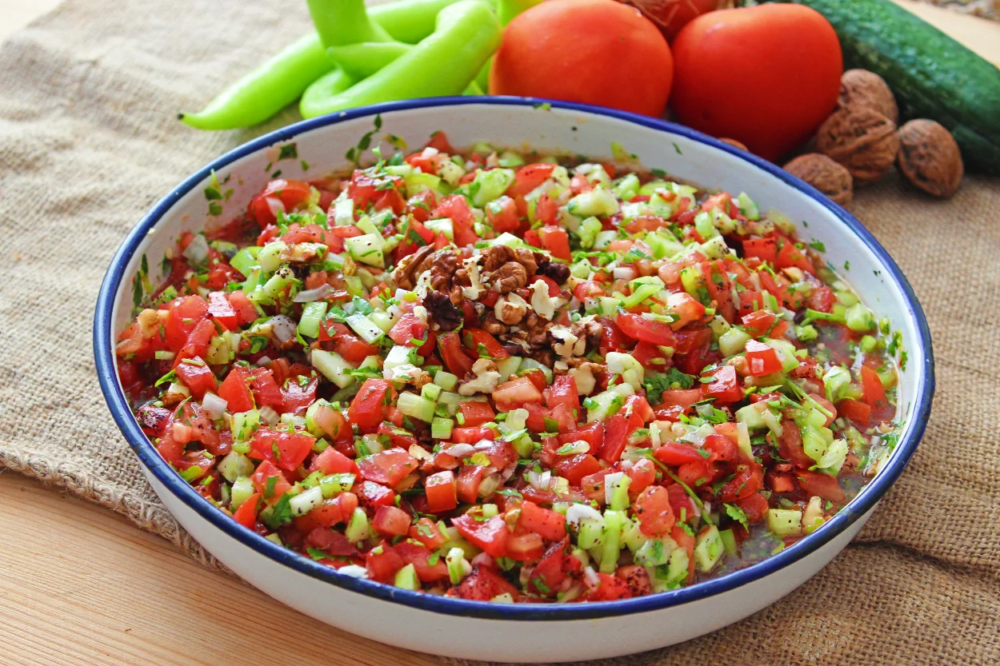
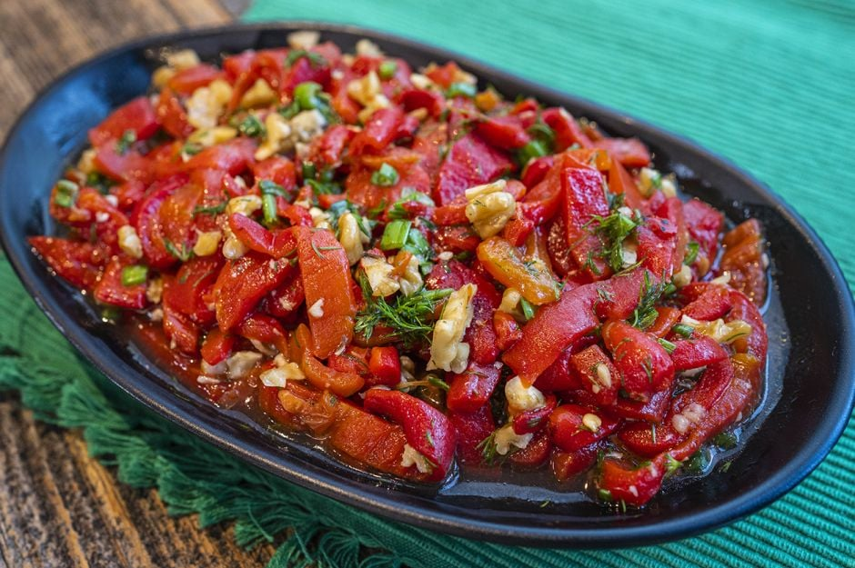
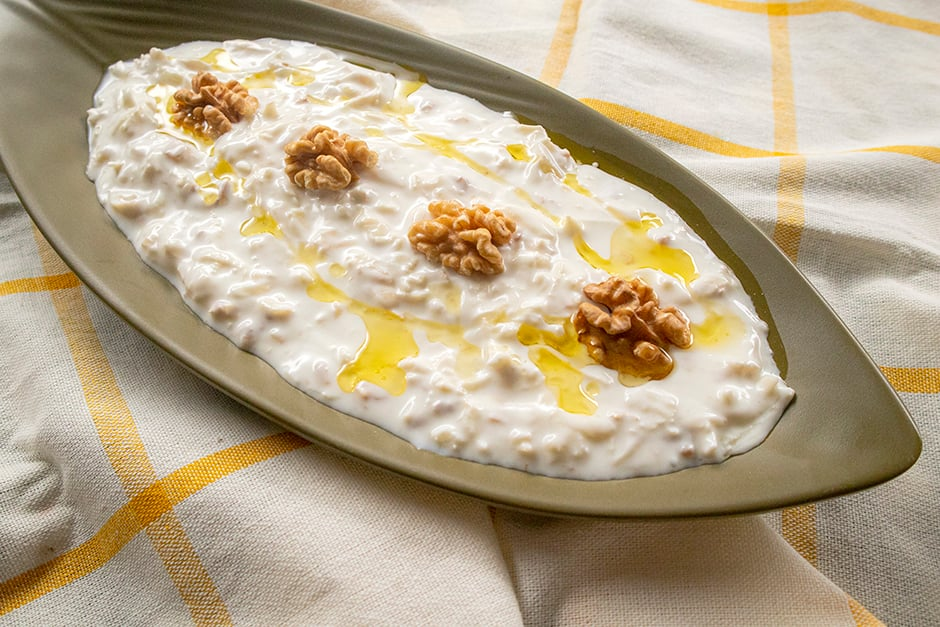
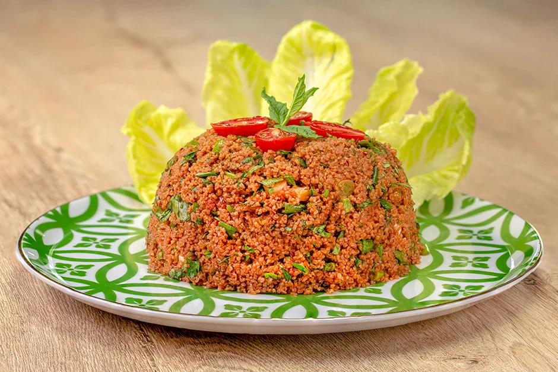

>
SALAD

GAVURDAGI SALAD
Ingredıents:
- 2 large tomatoes, diced
- 1 cucumber, diced
- 1 red onion, finely sliced
- 1 green bell pepper, diced
- 1/2 cup chopped fresh parsley
- 1/2 cup chopped fresh mint
- 1/2 cup crumbled feta cheese
- 1/4 cup olive oil
- 2 tablespoons red wine vinegar
- Salt and black pepper to taste
Instructions:
- In a large salad bowl, combine the diced tomatoes, cucumber, red onion, green bell pepper, fresh parsley, and fresh mint.
- In a small bowl, whisk together the olive oil, red wine vinegar, pomegranate molasses (if using), salt, and black pepper until well combined.
- Pour the dressing over the prepared vegetables in the salad bowl
- Gently toss the salad ingredients until they are well coated with the dressing.
- Sprinkle the crumbled feta cheese over the salad.
- Serve the Gavurdağı Salad immediately, allowing the flavors to meld.

ROASTED PEPPER SALAD
Ingredıents:
- 4 large red or green bell peppers
- 2 tomatoes, diced
- 1 cucumber, diced
- 1 red onion, finely sliced
- 1/4 cup chopped fresh parsley
- 1/4 cup extra-virgin olive oil
- 2 tablespoons red wine vinegar
- Salt and black pepper to taste
Instructions:
- Preheat the grill or oven broiler.
- Wash the bell peppers and place them on the grill or under the broiler, turning occasionally until the skin is charred and blistered.
- Transfer the grilled peppers to a bowl and cover with plastic wrap. Let them steam for about 10 minute
- Peel off the charred skin, remove seeds, and slice the peppers into thin strips.
- In a large salad bowl, combine the diced tomatoes, cucumber, red onion, and chopped fresh parsley.
- Add the grilled and sliced bell peppers to the bowl.
- In a small bowl, whisk together the extra-virgin olive oil, red wine vinegar, salt, and black pepper.
- Pour the dressing over the salad ingredients.
- Toss the salad gently until all ingredients are well coated with the dressing.
- Serve the Közlenmiş Biber Salatası immediately or refrigerate for a short time before serving to enhance the flavors.

CELERY SALAD
Ingredients:
- 4 cups celery, thinly sliced
- 1 cup green apples, julienned
- 1 cup walnuts, chopped
- 1/2 cup fresh parsley, chopped
- 1/4 cup mayonnaise
- 1/4 cup Turkish yogurt
- 1 tablespoon Dijon mustard
- 1 tablespoon honey
- 1 tablespoon lemon juice
- Salt and black pepper to taste
Instructions:
- In a large bowl, combine the thinly sliced celery, julienned green apples, chopped walnuts, raisins (if using), and chopped fresh parsley.
- In a small bowl, whisk together mayonnaise, Greek yogurt, Dijon mustard, honey, lemon juice, salt, and black pepper until well combined.
- Pour the dressing over the salad ingredients.
- Toss the salad gently until all ingredients are evenly coated with the dressing.
- Cover the bowl and refrigerate the celery salad for at least 30 minutes before serving. This allows the flavors to meld.
- Serve the Kereviz Salatası chilled as a refreshing side dish.

KISIR SALAD
Ingredıents:
- 2 cups fine bulgur
- 2.5 cups hot water
- 1/2 cup extra virgin olive oil
- 1/4 cup pomegranate molasses
- 1 teaspoon salt
- 1 teaspoon red pepper flakes
- 1/4 cup tomato paste
- 1 bunch of green onions
- 1/2 bunch of fresh parsley
- 1/2 bunch of fresh mint
- Juice of 1 lemon
- 2 medium tomatoes
- 1/2 cucumber
Instructions:
- Place the bulgur in a large bowl. Add hot water and stir. Cover with plastic wrap and let it sit for 15-20 minutes for the bulgur to swell.
- Add extra virgin olive oil, pomegranate molasses, salt, red pepper flakes, and tomato paste to the swollen bulgur. Mix well.
- For the filling, finely chop green onions, parsley, mint, lemon juice, tomatoes, and cucumber.
- Add the chopped ingredients to the bulgur mixture and mix thoroughly.
- Transfer the kısır salad to a serving plate. You can also serve it on lettuce leaves if desired.
- Serve chilled and enjoy!